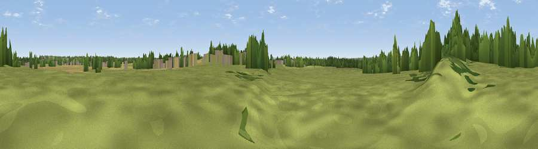

Viewpoint near Barnacle
#43897 in England · top 90% of its area beats it · near BarnacleThe view, rendered

A 360° render of this exact spot computed from the terrain model, tree cover and land cover — summer colours, afternoon light, calibrated against photographs of famous viewpoints. Real trees, hedges and buildings will differ in detail.
The panorama
Grey silhouette: terrain skyline in each direction (720 bearings, Earth curvature and refraction included). Dashed green: skyline with trees (+15 m) and buildings (+8 m) as obstacles. Blue strip: how far the ground is visible on each bearing.
Where the view opens
Wedge length = distance to the farthest visible ground on that bearing (vegetation-aware). Rings at 10, 25 and 50 km.
What fills the view
51% grassland · 18% woodland · 17% cropland · 15% built-up
Angular shares of the visible panorama (visual magnitude), not map area. Landscape diversity 0.54 (0–1 Shannon).
Key numbers
More beautiful places nearby
The staircase of upgrades: each row has a higher view potential than everything closer. Driving times are estimates from straight-line distance, calibrated against real road routing — check an actual route before setting out.
| Place | Direction | Drive | Score |
|---|---|---|---|
| Viewpoint near Ash Green | WSW · 5 km | ~11 min | 31.2 |
| Mount Jud | NNW · 8 km | ~16 min | 62.4 |
| Viewpoint near Ansley Common | NNW · 11 km | ~20 min | 63.1 |
| Viewpoint near Ansley Common | NW · 12 km | ~22 min | 69.0 |
| Viewpoint near Stanton under Bardon | NNE · 29 km | ~46 min | 76.0 |
| Viewpoint near Woodhouse Eaves | NNE · 32 km | ~50 min | 77.7 |
| Viewpoint near Elmley Castle | SW · 61 km | ~83 min | 80.5 |
| Bredon Hill | SW · 61 km | ~84 min | 83.0 |
52.46652, -1.45038 · source: osm peak · position refined by local search. Computed location — check access rights before visiting.